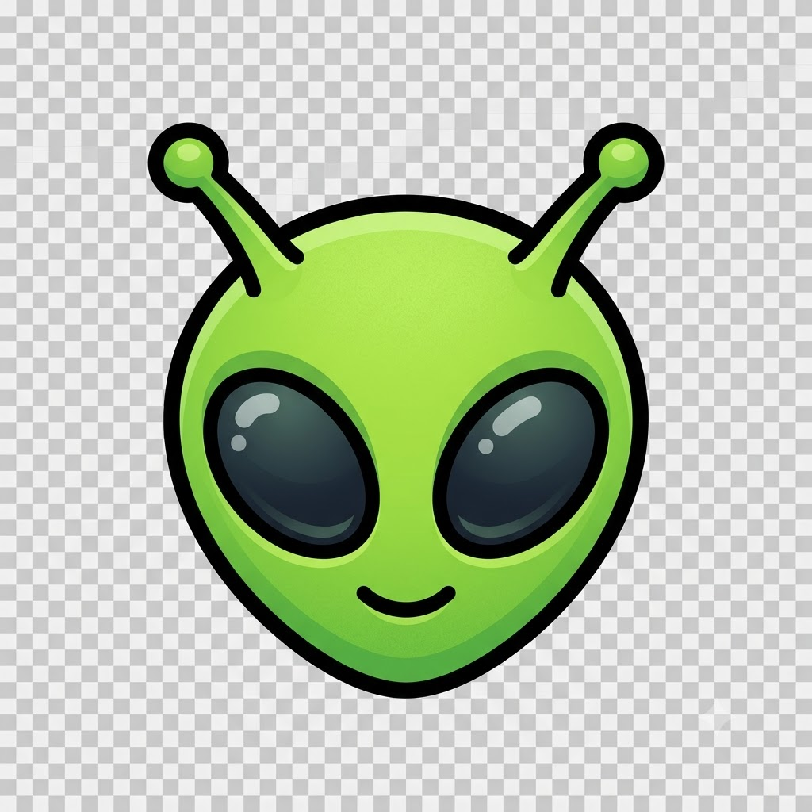

Introdução
Por: Luis F.
Este é um guia não oficial que visa catalogar, identificar e descrever os Alheiose suas variantes da melhor maneira. Não escute os sinais, desligue as televisões e só confie neste guia.
Aqui irei catalogar, descrever e identificar os Alheios de S.D.O.L.

Por: Luis F.
Este é um guia não oficial que visa catalogar, identificar e descrever os Alheiose suas variantes da melhor maneira. Não escute os sinais, desligue as televisões e só confie neste guia.